Обучение для психологов по РПП — это программа дополнительного профессионального образования, направленная на формирование практических навыков в диагностике и лечении расстройств пищевого поведения. Курсы подойдут клиническим и медицинским психологам, а также специалистам, планирующим пройти профессиональную переподготовку в области психотерапии РПП. Мы составили рейтинг образовательных программ, где обучение проходит в удобном дистанционном формате с доступом к учебным материалам, методам диагностики, коррекции веса и терапии различных нарушений пищевого поведения. По завершении обучения слушатели получают удостоверения установленного образца.
Информация обновлена:
ТОП онлайн-курсов обучения по психотерапии расстройств пищевого поведения (РПП)
- 🏆 Доказательная психотерапия расстройств пищевого поведения – Психодемия (по промокоду OnlineKursy действует скидка 🎁 5000 руб)
- 🏆 Психология нарушений пищевого поведения. Стратегии оказания психологической помощи – НАДПО (по промокоду onlinekursy действует скидка 🎁 5%)
- 🏆 Психолог-консультант по работе с расстройствами пищевого поведения – Онлайн Институт Smart
- Психолог-консультант с дополнительной специализацией в сфере нарушений пищевого поведения – НЦРДО (по промокоду onlinekursy действует скидка 🎁 5%)
- Расстройства пищевого поведения у детей – МИПО (по промокоду onlinekursy действует скидка 🎁 10%)
- Работа с расстройствами пищевого поведения (РПП) – ИППСС
- Расстройства пищевого поведения у детей – ИПО
- Психология нарушений пищевого поведения: стратегии оказания психологической помощи – ЦАППКК (по промокоду onlinekursy действует скидка 🎁 5%)
- Психология питания. Зависимость пищевых расстройств от психоэмоционального состояния – НИИДПО
- Расстройства пищевого поведения – Учебный центр АПОК
- Расстройства пищевого поведения – Учебный центр ЭКОДПО
- Курсы пищевого поведения – МШП
- Расстройство пищевого поведения: комплексная стратегия работы – Среда обучения
Отличительные преимущества каждой дистанционной программы обучения по РПП для психологов
| № | Курс и школа | Преимущества | |
|---|---|---|---|
| 🥇 | Доказательная психотерапия расстройств пищевого поведения – Психодемия | Доказательная база (КПТ, DBT, ACT, CFT), практика с клиентом уже во время обучения, 88 ч. практики из 127, обучение у клинического психолога, доступ к сообществу специалистов | Перейти |
| 🥈 | Психология нарушений пищевого поведения. Стратегии оказания психологической помощи – НАДПО | Более 860 ч., доступ к клиентам через платформу, диплом профпереподготовки, доступ к библиотекам, 175 ч. практики, телесно-ориентированный подход | Перейти |
| 🥉 | Психолог-консультант по работе с РПП – Онлайн Институт Smart | 256+ часов, международный диплом, участие в сообществе SmartMental, обратная связь и менторство, доступ навсегда | Перейти |
| 4 | Психолог-консультант с доп. специализацией в сфере РПП – НЦРДО | 1710 ч., доступ к ЛитРес и ЭБС, диплом установленного образца, коучинговые методы, 12 мес. обучения | Перейти |
| 5 | РПП у детей – МИПО | Диплом с регистрацией в ФИС-ФРДО, акцент на детей, поддержка карьерного центра, 544 ч. за 5 мес. | Перейти |
| 6 | Работа с РПП – ИППСС | Минимальная цена, 144 ч. за 2 мес., удостоверение о повышении квалификации, библиотека 10 000+ вебинаров | Перейти |
| 7 | РПП у детей – ИПО | Диплом, участие в практике и вебинарах, дистанционный формат с доступом 24/7, программа по клинической психологии | Перейти |
| 8 | Психология нарушений пищевого поведения – ЦАППК | Диплом профпереподготовки, 680 ч. за 5 мес., рассылка вакансий, гибкое обучение, доступ к БиблиоКлуб | Перейти |
| 9 | Психология питания – НИИДПО | Низкая цена, доступ к 13 000+ вебинарам, 4 недели, акцент на психоэмоциональное состояние и нутриенты | Перейти |
| 10 | РПП – АПОК | От 72 ч., удостоверение в ФИС ФРДО, доступ из любого региона, гибкий график, курсы без вступительных | Перейти |
| 11 | РПП – ЭКОДПО | Для врачей, дистанционно, от 2 недель, бесплатная пересдача, индивидуальный темп обучения | Перейти |
| 12 | Курсы пищевого поведения – МШП | Фокус на анорексию, булимию и переедание, индивидуальный график, обратная связь, практика | Перейти |
| 13 | РПП: комплексная стратегия – Среда обучения | Реальные кейсы, диплом профпереподготовки, опытные преподаватели, акцент на стратегии коррекции веса | Перейти |
1. 🏆 Доказательная психотерапия расстройств пищевого поведения – Психодемия
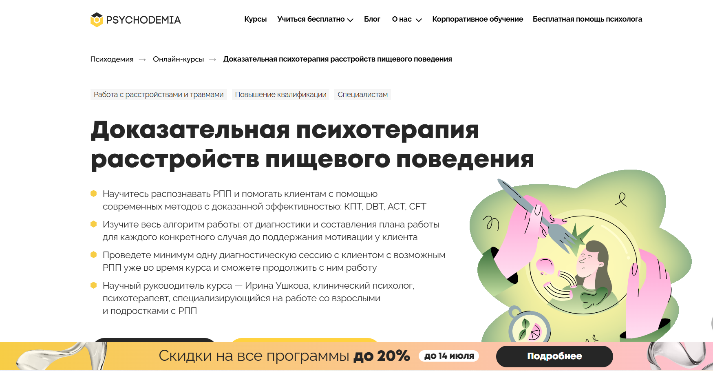- ✅ Официальный сайт: psychodemia.ru
- 💸 Цена обучения: 103 500 ₽
- 💳 Рассрочка: 5 750 ₽ в месяц на 18 месяцев
- 📚 Формат: дистанционный формат — видеолекции, практические вебинары, супервизии, интервизии, самостоятельная работа, итоговая сессия с клиентом
- ⏳ Продолжительность: 4 месяца, 127 академических часов (88 практики, 39 теории)
- 📜 Документ: удостоверение о повышении квалификации установленного образца
- 📝 Трудоустройство: практическая работа с реальным клиентом, опыт консультаций во время обучения
- 🔷 Для кого подходит курс: практикующим психологам, клиническим психологам, психиатрам и студентам старших курсов психологических факультетов
Особенности:
Программа направлена на обучение современным методам диагностики и терапии пищевых нарушений. В процессе обучения вы освоите навыки, необходимые для помощи пациентам с РПП — от определения симптомов до составления плана лечения. Курс построен в дистанционном формате, что позволяет совмещать обучение с работой. Уже на курсе проходит первая диагностическая сессия с клиентом, что делает обучение максимально практическим. Основан на международных и российских исследованиях, включает проверенные подходы: КПТ, DBT, ACT, CFT. Ведёт курс клинический психолог с большим практическим опытом в области лечения расстройств пищевого поведения.
Чему учатся студенты:
- Проводить диагностику расстройств пищевого поведения
- Работать с пищевыми нарушениями с помощью КПТ, DBT, ACT и других подходов
- Составлять терапевтический план и поддерживать мотивацию клиента
- Применять антидиетический подход и интуитивное питание
- Понимать связь РПП с соматическими и психологическими состояниями
- Работать с детьми, подростками и взрослыми пациентами
- Комбинировать подходы в зависимости от конкретного случая
Преподаватели:
- Ирина Ушкова — клинический психолог, психотерапевт, медицинский психолог, супервизор, автор книги «Вкус свободы», обучалась у ведущих мировых специалистов
Преимущества:
- Практика с реальными клиентами с возможным РПП уже во время курса
- Программа отвечает требованиям профессиональных стандартов
- Курс составлен на основе доказательных методов психотерапии
- Получение удостоверения о повышении квалификации
- Обучение под руководством опытного клинического психолога
- Доступ к закрытому сообществу специалистов после окончания
- Актуальные знания и навыки для практикующих специалистов
- Возможность налогового вычета до 13%
Отзывы учеников:
Слушатели курса особенно отмечают качество материалов, продуманную структуру занятий и доступный формат обучения. Большинство положительно отзывается о практической части и обратной связи от преподавателя, благодаря которой удается лучше усвоить навыки и применить их в реальной работе с клиентами.
Перейти на официальный сайт курса2. 🏆 Психология нарушений пищевого поведения. Стратегии оказания психологической помощи — Национальная академия дополнительного профессионального образования
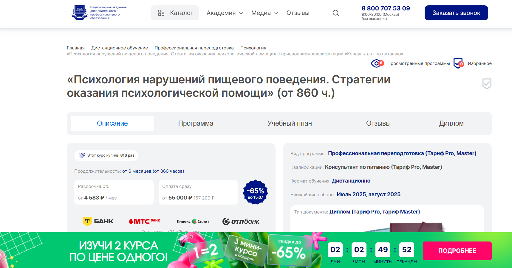- ✅ Официальный сайт: nadpo.ru
- 💸 Цена: от 55 000 ₽ (со скидкой — 157 200 ₽ -65%)
- 💳 Рассрочка: от 0% на 24 и 36 месяцев, от 4 583 ₽/мес
- 📚 Формат: дистанционный формат, видеоуроки, практические задания, супервизии, воркшопы, доступ к библиотекам
- ⏳ Продолжительность: от 6 месяцев (от 860 часов)
- 📜 Документ: диплом о профессиональной переподготовке
- 📝 Трудоустройство: доступ к онлайн-платформе с реальными клиентами, консультации по карьерному росту
- 🔷 Для кого подходит курс: начинающим, практикующим психологам, руководителям фитнес-центров, всем интересующимся психологией пищевого поведения
Особенности:
Курс создан для подготовки специалистов, способных профессионально помогать при нарушениях пищевого поведения. Программа построена с учетом стандартов ФГОС, что делает ее признанной на государственном уровне. Более 30% учебного времени — это практические занятия, включая консультации, супервизии и работу в тройках. Студенты осваивают не только теорию, но и применяют методы терапии пищевого расстройства на практике. Уже в процессе обучения можно получить первых клиентов через специальную платформу. Все обучение проходит в удобном дистанционном формате, с гибким графиком. Слушателям предоставляется доступ к книгам и учебным материалам. После окончания курса выдается диплом, действующий по всей России.
Чему учатся студенты:
- Проводить диагностику РПП и оценивать тяжесть нарушений
- Применять психотерапевтические подходы к коррекции пищевого поведения
- Разрабатывать индивидуальные программы питания и психологической помощи
- Использовать методы психотерапии расстройства пищевого поведения, включая телесно-ориентированный подход
- Понимать биологические и психологические причины РПП
- Работать с психическими аспектами переедания, анорексии и булимии
- Проводить консультации в дистанционном формате
Преподаватели:
- Тарасов Сергей Васильевич — кандидат психологических наук, доцент, с опытом с 2000 года
- Егорова Наталья Николаевна — кандидат психологических наук, 22 года научной и практической работы
- Челнокова Ирина Александровна — кандидат психологических наук, член Российской ассоциации КПТ
- Санжапова Эльмира Викторовна — кандидат педагогических наук, доцент, стаж с 2005 года
Преимущества:
- Обучение проходит в дистанционном формате, с доступом к платформе 24/7
- Гарантированный доступ к первичным клиентам через онлайн-платформу
- Диплом соответствует требованиям ФГОС и признается на территории РФ
- Более 175 часов практических заданий с преподавателями
- Участие в киноклубах, книгоклубах и супервизиях
- Можно совмещать обучение с основной работой
- Гибкий график занятий и индивидуальный подход
- Поддержка на всех этапах обучения — от освоения теории до старта практики
Отзывы учеников:
По мнению студентов, курс особенно ценен за насыщенную практику, высокую квалификацию преподавателей и возможность сразу начать работу с клиентами. Отмечают удобный дистанционный формат, обилие дополнительных материалов и поддержку кураторов на всех этапах.
Перейти на официальный сайт курса3. 🏆 Психолог-консультант по работе с расстройствами пищевого поведения – Онлайн Институт Smart
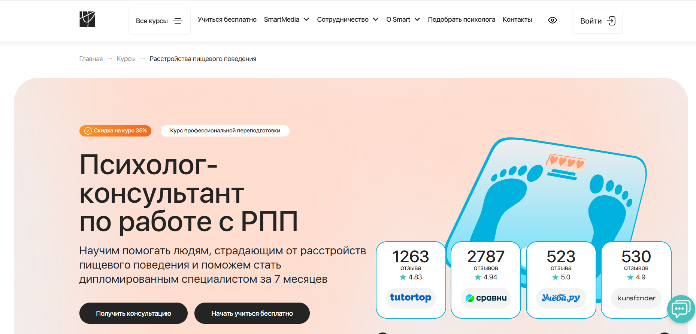- ✅ Официальный сайт: smart-inc.ru
- 💸 Цена обучения: от 254 900 ₽ (со скидкой -35% — )
- 💳 Рассрочка: от 10 621 ₽ в месяц до 24 месяцев без переплат, первый платёж через месяц
- 📚 Формат: дистанционный формат — видеолекции, тесты, практические задания, супервизии, обратная связь от преподавателей
- ⏳ Продолжительность: от 7 месяцев, 256+ часов
- 📜 Документ: диплом о профессиональной переподготовке
- 📝 Трудоустройство: доступ к первым клиентам, карьерное сопровождение, участие в SmartMental
- 🔷 Для кого подходит курс: для психологов, студентов, нутрициологов, врачей, а также людей с РПП и их родственников
Особенности:
Программа создана с акцентом на практическое обучение: супервизии, проработка кейсов и обратная связь от клинических специалистов. Студенты осваивают психотерапию расстройства пищевого поведения, включая диагностику РПП, методы коррекции пищевого поведения и работу с психологическими причинами нарушений. Учеба проходит на удобной онлайн-платформе, доступной 24/7. Обучение подойдет как тем, кто уже работает с пациентами, так и тем, кто только получает первое психологическое образование. Дистанционное образование дает гибкость в расписании и возможность совмещать обучение с другими сферами жизни. После завершения обучения выпускники получают диплом, признанный на государственном и международном уровне.
Чему учатся студенты:
- Проводить диагностику РПП с использованием современных шкал оценки
- Работать с анорексией, булимией и перееданием через эффективные стратегии терапии
- Применять когнитивно-поведенческий, CFT и ACT подходы в терапии
- Восстанавливать здоровое пищевое поведение у клиентов
- Анализировать соматические последствия РПП и выстраивать планы их коррекции
- Использовать принципы здорового питания в процессе консультирования
Преподаватели:
- Никита Чернов — клинический психолог, CBT-, ACT-, CFT-терапевт, руководитель Центра контекстуальной поведенческой терапии
- Мария Белякова — практикующий психолог, эксперт по психологии пищевого поведения
Преимущества:
- Профессиональная переподготовка по международным стандартам
- Доступ к курсу навсегда и поддержка даже после окончания обучения
- Групповые практикумы, супервизии, индивидуальные менторские встречи
- Возможность участия в сообществе выпускников и профессиональных ассоциациях
- Льготное членство в ОППЛ и АППП
- Налоговый вычет — возврат 13% от стоимости обучения
- Поддержка 24/7 от кураторов и тьюторов
Отзывы учеников:
Студенты хвалят курс за сильную команду преподавателей, качественные материалы, удобный дистанционный формат обучения и практическую направленность. Особо отмечают возможность начать помогать клиентам уже во время курса и высокий уровень супервизий. Многие указывают на уверенность в своих силах после прохождения обучения и ценность полученного диплома.
Перейти на официальный сайт курса4. Психолог-консультант с дополнительной специализацией в сфере нарушений пищевого поведения – Национальный центральный институт развития дополнительного образования
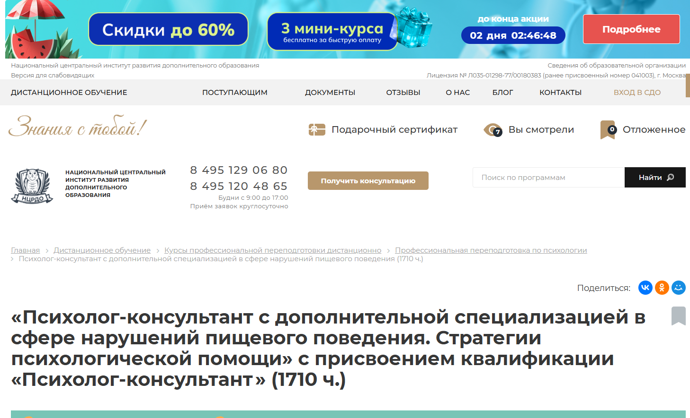
- ✅ Официальный сайт: ncrdo.ru
- 💸 Цена: 123 900 ₽ (по акции — 53 000 ₽ )
- 💳 Рассрочка: 1 472 ₽/мес на 36 месяцев или 30% первый взнос от института
- 📚 Формат: дистанционное обучение, аудиолекции, текстовые лекции, вебинары, методички, практические задания, тесты, зачёты, консультации с преподавателями
- ⏳ Продолжительность: 12 месяцев (1710 часов)
- 📜 Документ: диплом о профессиональной переподготовке установленного образца
- 📝 Трудоустройство: HR-консультации, помощь в трудоустройстве, добавление данных в Федеральный реестр документов
- 🔷 Для кого подходит курс: для специалистов с высшим или средним профессиональным образованием, студентов, желающих получить квалификацию психолога-консультанта
Особенности:
Курс направлен на подготовку специалистов, способных работать с психотерапией расстройств пищевого поведения. Обучение проходит в дистанционном формате, что удобно для совмещения с работой. Программа акцентирована на практических навыках и современных методах лечения пациентов с нарушениями пищевого поведения. Ведущие преподаватели, имеющие опыт в клинической психологии и доказательной психотерапии, проводят онлайн-занятия и групповые консультации. Студенты получают доступ к ЛитРес и ЭБС, что помогает углубить знания. После прохождения курса слушатели получают диплом и могут официально работать в сфере психологии.
Чему учатся студенты:
- Пониманию причин возникновения различных РПП
- Методам диагностики нарушений пищевого поведения
- Техникам психокоррекции и психотерапии РПП
- Работе с эмоциональной зависимостью от пищи
- Разработке стратегий психологической помощи
- Применению коучинговых и терапевтических подходов
- Основам клинической психологии и психофизиологии
- Проведению групповых и индивидуальных консультаций
Преподаватели:
- Мельникова Елена Васильевна — опыт научно-практической деятельности с 2010 года
- Тышкевич Марина Юрьевна — работает в сфере психологии с 2006 года
- Шевченко Дария Игоревна — практикующий специалист с 2018 года
- Салихова Мария Романовна — стаж в психологии с 2007 года
Преимущества:
- Возможность обучения без отрыва от работы
- Гибкий график прохождения курсов и сдачи тестов
- Бесплатный доступ к дополнительным материалам
- Методическая поддержка и онлайн-консультации
- Доступ к системе дистанционного обучения 24/7
- Рассрочка без участия банков
- Практическая направленность заданий и кейсов
- Регистрация диплома в Федеральной информационной системе
Отзывы учеников:
Студенты института чаще всего отмечают: удобный дистанционный формат обучения, насыщенную программу, актуальные методы диагностики РПП, высокий профессионализм преподавателей и подробные методички. Также подчеркивают, что курс помогает реально работать с клиентами и выстраивать индивидуальные стратегии терапии нарушений пищевого поведения.
Перейти на официальный сайт курса5. Расстройства пищевого поведения у детей — Московский Институт Профессионального Образования
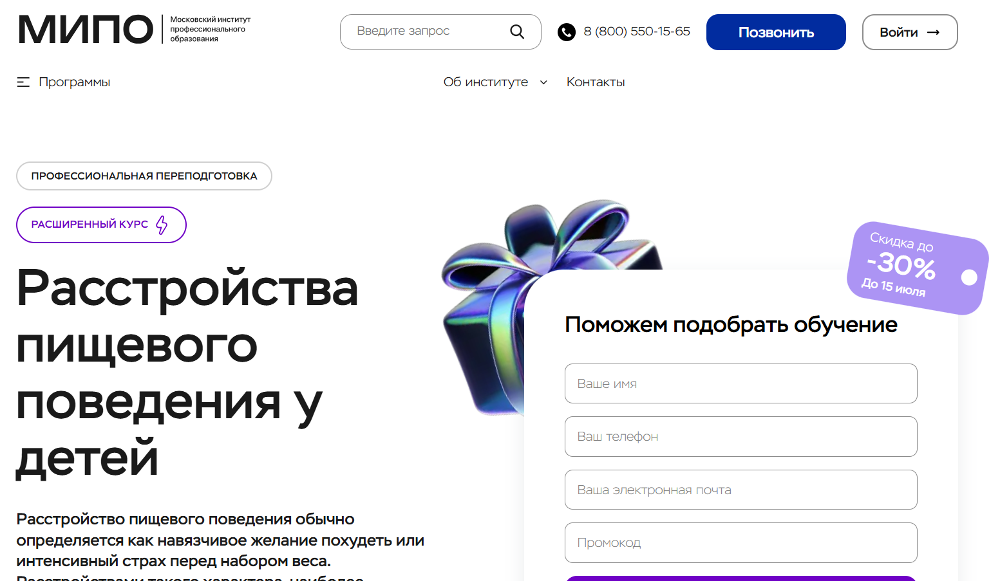- ✅ Официальный сайт: mipo.msk.ru
- 💸 Цена: от 41 556 ₽ до 67 237 ₽ (с учетом скидки до 30%).
- 💳 Рассрочка: до 24 месяцев, от 1 732 ₽/мес.
- 📚 Формат: дистанционное образование — видеолекции, тесты, вебинары, куратор, практические задания, чаты и доступ к записям.
- ⏳ Продолжительность: 5 месяцев / 544 академических часа.
- 📜 Документ: диплом о профессиональной переподготовке с регистрацией в ФИС-ФРДО.
- 📝 Трудоустройство: помощь в подборе карьеры, рекомендации, карьерный центр.
- 🔷 Для кого подходит курс: для начинающих, практикующих психологов и тех, кто хочет использовать знания для себя.
Особенности:
Программа разработана для глубокого освоения психотерапии расстройств, связанных с пищевым поведением у детей. Обучение ведется в дистанционном формате, что позволяет совмещать занятия с работой и жизнью в любом городе. Студенты получают практические навыки, изучая современные методы диагностики и лечения расстройств. По окончании выдается диплом, который котируется в России и за рубежом. Курс подойдёт как для будущих клинических психологов, так и для тех, кто стремится понять психологические причины нарушений пищевого поведения и овладеть методами помощи пациентам. Поддержка кураторов, доступ к образовательной платформе и работа с реальными кейсами создают комфортную и эффективную среду обучения.
Чему учатся студенты:
- Изучают критерии психического здоровья и классификацию РПП
- Разбираются в причинах и симптомах нарушений пищевого поведения
- Осваивают методы диагностики и коррекции пищевых зависимостей
- Учатся стратегиям психологической помощи при лечении РПП
- Изучают психологию личности и основы клинической психологии
- Получают навыки психотерапии расстройств и работы с телесным образом
Преподаватели:
- Урывчикова Татьяна Геннадьевна — клинический психолог, нейропсихолог, член Ассоциации когнитивно-поведенческой психотерапии
- Перемолотова Ирина Александровна — арт-терапевт, коуч ICI, автор трансформационных программ
- Цяпало Анна — психоаналитический коуч, сертифицированный сексотерапевт
- Миркина Елена — клинический психолог, президент фонда развития потенциала, гештальт-тренер
- Сальникова Дарья — научный сотрудник РАО, дефектолог, специальный психолог
- Балобанов Василий — семейный психолог, эксперт федеральных СМИ, автор обучающих методик
Преимущества:
- Обучение в дистанционном формате с доступом к вебинарам и материалам
- Официальный диплом с внесением в государственный реестр
- Программа ориентирована на практику и работу с клиентами
- Поддержка менторов и методистов на протяжении всего курса
- Разнообразие тарифов — от базового до экспертного с курсами повышения квалификации
- Возможность использовать знания как в профессиональной, так и в личной сфере
- Диплом международного образца, востребован на рынке труда
- Актуальность знаний — соответствие современным подходам в лечении РПП
Отзывы учеников:
Выпускники чаще всего отмечают удобный дистанционный формат обучения, профессионализм преподавателей и высокий уровень обратной связи. Подчёркивают практическую пользу курса и применимость полученных знаний в реальной работе с пациентами и клиентами.
Перейти на официальный сайт курса6. Работа с расстройствами пищевого поведения (РПП) – Институт прикладной психологии в социальной сфере
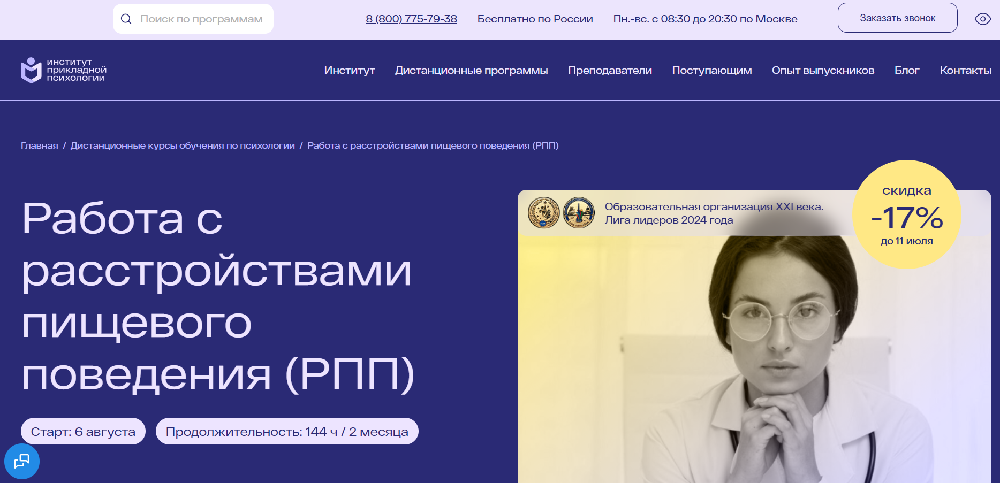
- ✅ Официальный сайт: ippss.ru
- 💸 Цена обучения: 19 100 ₽ (полная стоимость — 23 000 ₽)
- 💳 Рассрочка: возможность оформить налоговый вычет 13%
- 📚 Формат: дистанционный формат — видеоуроки, конспекты, тесты, задания с обратной связью, доступ к библиотеке из 10 000+ вебинаров
- ⏳ Продолжительность: 2 месяца (144 академических часа)
- 📜 Документ: удостоверение о повышении квалификации, регистрация в ФИС ФРДО
- 📝 Трудоустройство: курс помогает расширить практику и специализацию для работы с клиентами с нарушениями пищевого поведения
- 🔷 Для кого подходит курс: клиническим психологам, психотерапевтам, специалистам по питанию, тренерам и консультантам, работающим с пищевыми зависимостями
Особенности:
Обучение построено на стандартах клинической психологии и включает современные подходы психотерапии расстройств пищевого поведения. Студенты изучают стратегии психологической помощи и проходят практическую подготовку в дистанционном формате. Программа предоставляет полный комплект методик, включая диагностические инструменты, психотерапевтические техники, а также доступ к онлайн-вебинарам и базе записей. После успешного завершения курса выдается официальный документ, действующий по всей России. Преподаватели сопровождают каждого участника на всех этапах, помогая освоить практические навыки для работы с пациентами с РПП.
Чему учатся студенты:
- Анализу причин и проявлений нарушений пищевого поведения
- Применению методов диагностики РПП
- Психотерапевтическим стратегиям коррекции расстройств
- Работе с симптомами анорексии, булимии и переедания
- Разработке индивидуальных программ помощи клиентам
- Навыкам консультирования по вопросам самооценки и образа тела
- Использованию опросников, дневников и шкал оценки состояния
Преподаватели:
- Вотинцева Татьяна Сергеевна — семейный психолог, магистр психологии, специалист по системной семейной терапии, член Международной ассоциации психологов
Преимущества:
- Обучение без вступительных экзаменов и требований к профилю образования
- Доступ к учебным материалам в любое время с любого устройства
- Постоянная поддержка от преподавателей и службы поддержки
- Реальные кейсы и демонстрационные сессии с клиентами
- Сертификаты за участие в вебинарах
- Поддержка сообщества выпускников и возможность вступить в ОППЛ
- Актуальные знания, основанные на профстандартах и ФГОС
- Практические задания с разбором от преподавателей
Отзывы учеников:
Слушатели курса отмечают, что обучение построено понятно и практично, материал подается без лишней информации. Особо ценится поддержка преподавателей, структура курса и удобный онлайн-формат. Студенты говорят, что обучение помогает научиться помогать клиентам с реальными запросами.
Перейти на официальный сайт курса7. Расстройства пищевого поведения у детей – Институт Профессионального Образования
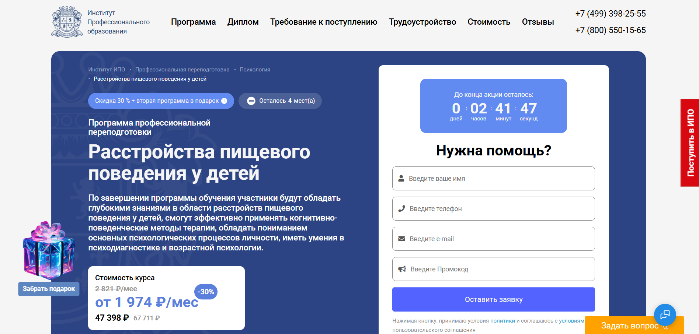
- ✅ Официальный сайт: ipo.msk.ru
- 💸 Цена обучения: от 47 398 ₽ со скидкой 30%
- 💳 Рассрочка: от 1 974 ₽/мес на 24 месяца
- 📚 Формат: дистанционные видеоуроки, тесты, практические задания, вебинары, кураторская поддержка
- ⏳ Продолжительность: 6 месяцев / 544 академических часа
- 📜 Документ: диплом о профессиональной переподготовке
- 📝 Трудоустройство: поддержка Центра развития карьеры, помощь с резюме и консультациями
- 🔷 Для кого подходит курс: начинающим психологам, педагогам, клиническим психологам, специалистам по работе с детьми и семьёй
Особенности:
Программа профессиональной переподготовки направлена на развитие у студентов практических навыков психотерапии расстройств пищевого поведения у детей. Учебный процесс организован в дистанционном формате с гибким графиком, что позволяет проходить обучение в удобное время. Участники курса изучают методы диагностики и психотерапевтические подходы, освоенные ведущими клиническими психологами. Важное внимание уделяется психологии пищевого поведения, семейным факторам и работе с различными рпп. Студенты получают доступ к дополнительным материалам, библиотеке и онлайн-встречам с менторами. Обучение проходит в комфортной онлайн-среде с поддержкой кураторов и обратной связью по заданиям.
Чему учатся студенты:
- Применять когнитивно-поведенческие методы в терапии пищевых нарушений
- Проводить диагностику и консультирование родителей
- Разбираться в психических причинах расстройств у детей
- Выстраивать индивидуальные программы коррекции поведения
- Работать с симптомами анорексии, булимии, компульсивного переедания
- Оценивать психическое состояние ребёнка и особенности его личности
Преподаватели:
- Анастасия Александровна Баранова — специалист по эриксоновскому гипнозу, дипломированный когнитивно-поведенческий терапевт
- Олеся Александровна Круглушина — консультирующий психолог, семейный терапевт, преподаватель психологии
- Юлианна Евгеньевна Койфман — психолог в социальной сфере, тренинг-менеджер
Преимущества:
- Дистанционное образование с бессрочным доступом к материалам
- Официальный диплом, действующий по всей территории РФ
- Возможность получить налоговый вычет за обучение
- Вторая программа в подарок при записи
- Участие в онлайн-практикумах и вебинарах от практикующих специалистов
- Программа соответствует стандартам клинической психологии
- Психотерапевтические методы применимы в практике с детьми и семьями
Отзывы учеников:
По данным с независимых платформ, студенты особенно отмечают профессиональный уровень преподавателей, практическую направленность заданий и удобный формат обучения. Большинство выпускников довольны качеством курсов и рекомендуют обучение в ИПО коллегам. Часто подчеркиваются простота подачи материала, грамотная структура курсов и оперативная обратная связь.
Перейти на официальный сайт курса8. Психология нарушений пищевого поведения: стратегии оказания психологической помощи – Центральная академия профессиональной переподготовки и повышения квалификации кадров
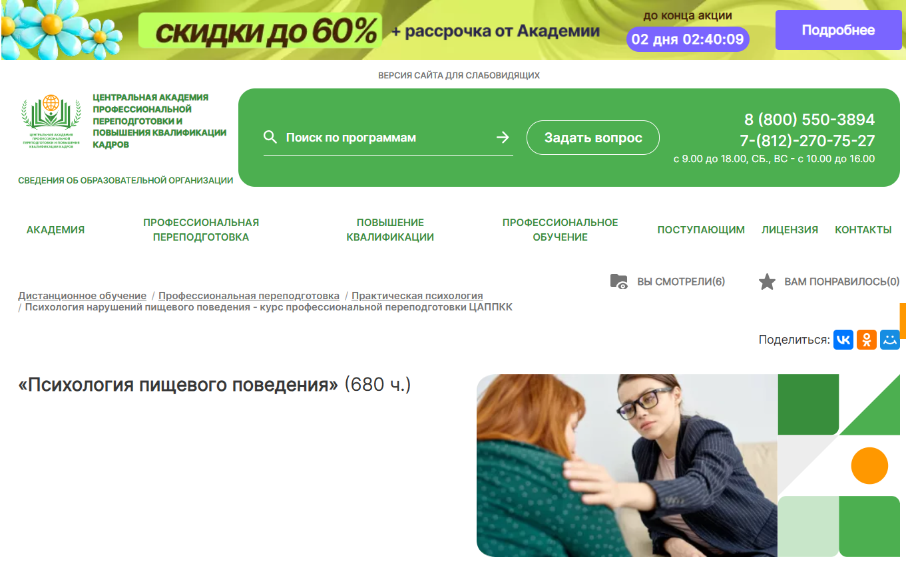- ✅ Официальный сайт: appkk.ru
- 💸 Цена: 31 500 ₽ (вместо 54 600 ₽ по акции -42%).
- 💳 Рассрочка: от 875 ₽ в месяц на 36 месяцев.
- 📚 Формат: дистанционный формат, включающий видеолекции, аудиоматериалы, библиотеку вебинаров, тесты, контрольные задания и поддержку куратора.
- ⏳ Продолжительность: 5 месяцев (680 академических часов).
- 📜 Документ: диплом о профессиональной переподготовке, вносимый в ФИС ФРДО.
- 📝 Трудоустройство: поддержка HR-наставника, помощь в составлении резюме, рассылка актуальных вакансий и консультации по развитию карьеры.
- 🔷 Для кого подходит курс: для психологов, диетологов, врачей, фитнес-инструкторов, нутрициологов, блогеров и всех, кто хочет работать с РПП и пищевыми зависимостями.
Особенности:
Курс разработан с учетом требований ФГОС и профстандартов. Обучение проходит в заочном формате с применением дистанционных образовательных технологий. Все материалы доступны круглосуточно, что позволяет легко совмещать обучение с работой и другими обязанностями. Студенты могут сохранять лекции, использовать их офлайн, получать консультации от преподавателя и просматривать вебинары без дополнительной оплаты. Обучение организовано с акцентом на практические навыки, стратегии помощи и клинические аспекты психотерапии расстройств пищевого поведения.
Чему учатся студенты:
- Понимать психологические причины нарушений пищевого поведения
- Применять методы диагностики и коррекции РПП
- Консультировать клиентов с пищевыми зависимостями
- Разрабатывать индивидуальные программы питания
- Изучать клиническую психологию и принципы психотерапии РПП
- Применять эффективные стратегии помощи при булимии, анорексии и других видах РПП
Преподаватели:
- Преподаватель Академии — опытный специалист в области клинической психологии и дистанционного образования (ФИО не указано на сайте)
Преимущества:
- Бессрочный доступ к курсу и дополнительным материалам
- Поддержка техподдержки без выходных с 9:00 до 21:00
- Документы отправляются по почте с отслеживанием
- Выдается диплом установленного образца с регистрацией в ФИС ФРДО
- Дистанционное обучение с гибким графиком
- Доступ к библиотеке «БиблиоКлуб» и аудиолекциям
- Возможность совмещать обучение с работой и семьей
- HR-наставник помогает в трудоустройстве после окончания курса
Отзывы учеников:
Слушатели отмечают удобный формат, сильную методическую базу и качество преподавания. В отзывах чаще всего упоминаются доступность информации, насыщенность программы, хорошая обратная связь от куратора и высокий уровень организации дистанционного формата. Студенты также подчеркивают, что обучение помогло им освоить реальные практические навыки и начать помогать клиентам с РПП.
Перейти на официальный сайт курса9. Психология питания. Зависимость пищевых расстройств от психоэмоционального состояния – АНО «НИИДПО»
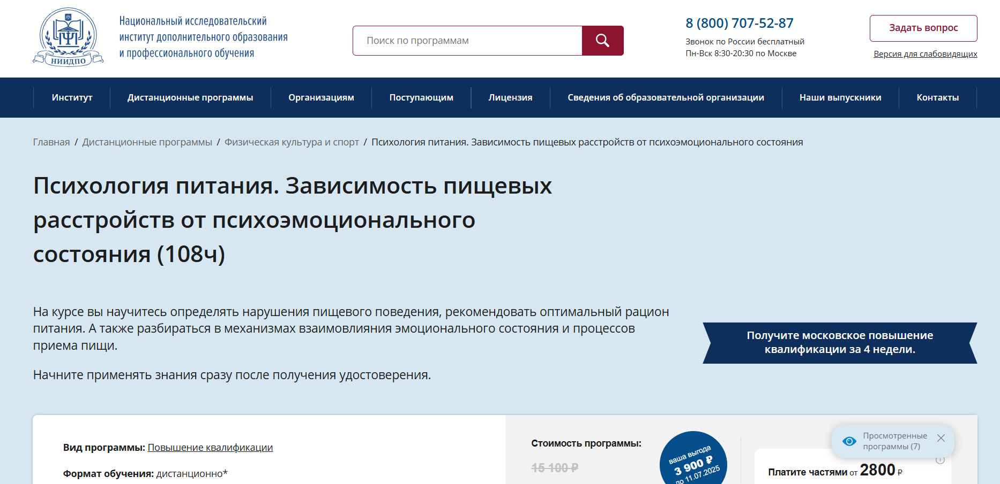
- ✅ Официальный сайт: niidpo.ru
- 💸 Цена: 11 200 ₽ (полная стоимость — 15 100 ₽)
- 💳 Рассрочка: от 2 800 ₽ каждые 2 недели без комиссии
- 📚 Формат: дистанционное обучение: видеолекции, вебинары, тесты, практические задания, доступ к 13000+ вебинарам
- ⏳ Продолжительность: 4 недели
- 📜 Документ: удостоверение о повышении квалификации установленного образца
- 📝 Трудоустройство: удостоверение принимается работодателями, способствует повышению квалификации
- 🔷 Для кого подходит курс: для специалистов в области психологии, медицины, диетологии, а также всех, кто сталкивается с нарушениями пищевого поведения у пациентов или клиентов
Особенности:
Курс разработан специально для тех, кто хочет освоить современные подходы к диагностике и коррекции пищевых зависимостей. Удобный дистанционный формат позволяет проходить обучение без отрыва от работы. После окончания курса слушатели получают бессрочный доступ к учебным материалам. Программа включает глубокий разбор влияния психоэмоционального состояния на расстройства пищевого поведения. Обучение основано на практике клинической психологии и психотерапевтических методов. Вы получите знания, которые помогут помогать клиентам и проводить консультации по вопросам РПП. Сертификаты за участие в вебинарах также входят в курс.
Чему учатся студенты:
- Определять виды нарушений пищевого поведения
- Разбираться в связи психического состояния и пищевого поведения
- Применять методы коррекции и терапии РПП
- Оценивать роль витаминов и микроэлементов в рационе
- Разрабатывать стратегии сбалансированного питания
- Понимать биологическую ценность нутриентов
- Применять знания в консультациях с клиентами и пациентами
Преподаватели:
- Дермелёва Марина Владимировна — преподаватель программ дополнительного профессионального образования, эксперт-практик, опытный педагог
Преимущества:
- Форма обучения — полностью дистанционная, без поездок и отрывов от работы
- Удостоверение выдается официальным институтом с государственной лицензией
- Бессрочный доступ ко всем учебным материалам после прохождения курса
- Возможность участвовать в онлайн-вебинарах и получить сертификаты
- Доступ к архиву из более чем 13 000 вебинаров
- Гибкая система оплаты без комиссий
- Реальные кейсы и практические задания в каждом модуле
- Поддержка преподавателей на всех этапах обучения
Отзывы учеников:
Студенты чаще всего отмечают: понятную подачу материала, квалифицированных преподавателей и практическую пользу. Учащиеся также положительно оценивают бессрочный доступ к материалам и обширный архив вебинаров, который помогает углублять знания даже после окончания курса.
Перейти на официальный сайт курса10. Расстройства пищевого поведения — Учебный центр АПОК
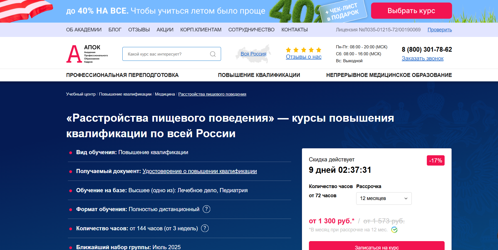- ✅ Официальный сайт: apokdpo.ru
- 💸 Цена: от 15 600 ₽ со скидкой 17%
- 💳 Рассрочка: до 12 месяцев от 1 300 ₽ в месяц, без переплат и первоначального взноса
- 📚 Формат: дистанционный формат: видеоуроки, тестирование, методические материалы, личный кабинет, бесплатные пересдачи
- ⏳ Продолжительность: от 72 до 144 часов (от 3 недель)
- 📜 Документ: удостоверение о повышении квалификации, вносится в реестр ФИС ФРДО, действует по всей России
- 📝 Трудоустройство: способствует развитию профессиональных компетенций для лечения пациентов с РПП
- 🔷 Для кого подходит курс: для клинических психологов, психотерапевтов, медицинских психологов, врачей с высшим образованием
Особенности:
Курс помогает освоить современные подходы к лечению расстройств пищевого поведения и совершенствовать профессиональные навыки. Обучение проходит в дистанционном формате с доступом к материалам из любой точки страны. Благодаря удобному формату обучения, студенты могут совмещать обучение с работой. По итогу обучения выдается удостоверение, соответствующее требованиям 273-ФЗ. Все сведения о документе вносятся в госреестр. Программа разрабатывается с учетом требований клинической психологии и ориентирована на практические навыки. Возможна персонализация учебного плана под конкретные профессиональные задачи. Курсы повышения квалификации доступны по всей России.
Чему учатся студенты:
- Методам диагностики нарушений пищевого поведения
- Современным психотерапевтическим подходам к лечению РПП
- Анализу психологических причин пищевых зависимостей
- Стратегиям психологической коррекции веса
- Работе с пациентами, страдающими нервной анорексией и булимией
- Оценке психологических особенностей питания
Преподаватели:
- Преподаватели учебного центра АПОК: сертифицированные специалисты в области клинической психологии и доказательной психотерапии
Преимущества:
- Дистанционное образование с гибким графиком
- Возможность оплаты в рассрочку без переплат
- Ускоренные сроки прохождения программы
- Доставка документов бесплатно в любой регион России
- Легитимный документ с внесением в ФИС ФРДО
- Программы соответствуют образовательным стандартам
- Поддержка специалистов на всех этапах обучения
Отзывы учеников:
Слушатели отмечают удобный дистанционный формат, квалификацию преподавателей и актуальность учебных материалов. Положительно оценивается возможность проходить курсы без отрыва от основной работы и получать удостоверения, признаваемые работодателями.
Перейти на официальный сайт курса11. Расстройства пищевого поведения — Учебный центр дополнительного профессионального образования ЭКОДПО
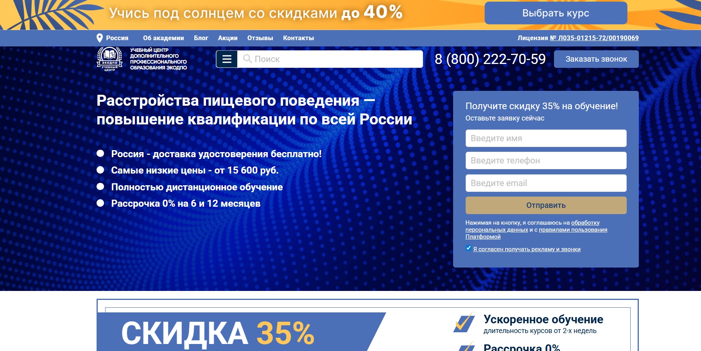- ✅ Официальный сайт: ecodpo.ru
- 💸 Цена: от 15 600 ₽ (со скидкой 35%).
- 💳 Рассрочка: от 1 300 ₽ в месяц, 0% на 6 или 12 месяцев от СБЕР и Тинькофф.
- 📚 Формат: дистанционные образовательные программы, теоретические модули, тестирование, консультации с преподавателями онлайн, личный кабинет с доступом 24/7.
- ⏳ Продолжительность: от 2 недель (до 3 месяцев).
- 📜 Документ: удостоверение о повышении квалификации установленного образца с внесением в ФИС ФРДО.
- 📝 Трудоустройство: возможно в клиники, медицинские центры, санатории и реабилитационные учреждения.
- 🔷 Для кого подходит курс: для специалистов с высшим медицинским образованием (лечебное дело, педиатрия), прошедших ординатуру по терапии.
Особенности:
Программа повышения квалификации по пищевому поведению разработана для врачей и медицинских психологов, желающих освоить современные подходы к лечению пациентов с РПП. Обучение проходит полностью в дистанционном формате, без вступительных экзаменов. Можно начать в любое время, не дожидаясь набора группы. Доступ к лекциям и материалам открыт круглосуточно, а итоговые тесты можно пересдавать бесплатно. Удостоверение высылается почтой бесплатно по всей России. Это удобный формат для практикующих специалистов, которым важно совмещать работу и обучение. Идеально подходит для восстановления в профессии или повышения квалификации по клинической психологии и психотерапии.
Чему учатся студенты:
- Проводить диагностику и скрининг нарушений пищевого поведения
- Разрабатывать индивидуальные стратегии коррекции питания
- Применять современные методы лечения РПП
- Оформлять медицинскую документацию
- Анализировать психические аспекты и причины возникновения пищевых зависимостей
- Формировать установки на здоровое питание и образ жизни
Преподаватели:
- Преподаватели не указаны поименно на официальном сайте, обучение проводится квалифицированными специалистами с опытом в области клинической психологии, психотерапии и медицины.
Преимущества:
- Полностью дистанционное образование с доступом 24/7
- Индивидуальный график прохождения курса
- Неограниченное количество попыток пересдачи итогового теста
- Бесплатная доставка удостоверения по России
- Возможность начать обучение без набора группы
- Консультации с преподавателями в мессенджерах
- Открытый доступ к материалам в течение года после окончания курса
- Разработка персональной программы обучения бесплатно
Отзывы учеников:
Слушатели хвалят доступный дистанционный формат, высокое качество учебных материалов, оперативную поддержку кураторов и быструю доставку документов. Многие отмечают, что обучение помогло систематизировать знания и применить их в работе с пациентами, страдающими от расстройств пищевого поведения.
Перейти на официальный сайт курса12. Курсы пищевого поведения — Институт психологии "Videoforme"
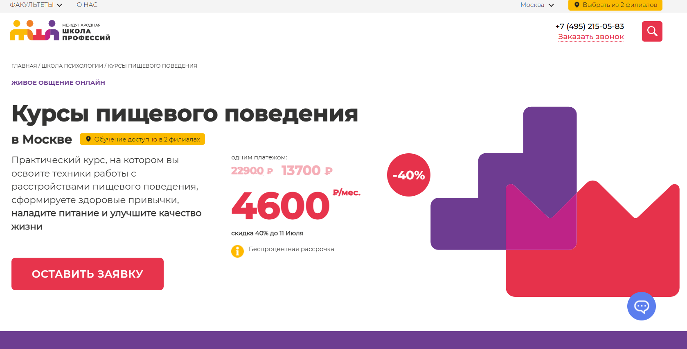
- ✅ Официальный сайт: moscow.videoforme.ru
- 💸 Цена: от 13 700 ₽, уточняется на сайте
- 💳 Рассрочка: беспроцентная, доступна всем студентам от 4600₽ на 4 платежа
- 📚 Формат: практические занятия, лекции, домашние задания, обратная связь с преподавателями
- ⏳ Продолжительность: индивидуальный график, уточняется при записи
- 📜 Документ: удостоверение о дополнительном профессиональном образовании
- 📝 Трудоустройство: курс направлен на развитие навыков для практики и консультирования клиентов
- 🔷 Для кого подходит курс: для медицинских и клинических психологов, студентов психологии, консультантов, психотерапевтов
Особенности:
Программа направлена на освоение практических техник в работе с нарушениями пищевого поведения, включая анорексию, булимию и переедание. Курс помогает изучить современные подходы к диагностике и терапии расстройств, связанных с пищевыми зависимостями. Формат обучения гибкий и ориентирован на дистанционное образование с доступом к актуальным учебным материалам. Студенты учатся разрабатывать индивидуальные программы помощи пациентам с различными типами РПП. Обучение проводят клинические психологи с опытом работы и практическими кейсами. Поддержка преподавателей в процессе обучения позволяет лучше понять психологические причины РПП. По завершению курса выдается официальный документ, подтверждающий квалификацию.
Чему учатся студенты:
- Методам диагностики РПП
- Психотерапевтическим подходам к лечению пациентов с пищевыми нарушениями
- Анализу психологических аспектов расстройств пищевого поведения
- Коррекции пищевых привычек и формированию здорового питания
- Работе с мотивацией клиента и сопровождению в процессе терапии
Преподаватели:
- Информация о преподавателях доступна на официальном сайте курса
Преимущества:
- Обучение дистанционно — удобно для занятых специалистов
- Выдается удостоверение о повышении квалификации
- Программа подходит под требования дополнительного профессионального образования
- Основана на современных методах доказательной психотерапии
- Фокус на практические навыки и стратегии психологической коррекции
- Возможность помочь клиенту с различными формами РПП
- Актуальные материалы и индивидуальный график обучения
- Доступ к лекциям и заданиям через онлайн-платформу
Отзывы учеников:
Студенты отмечают полезность практических занятий и структурированный подход. Среди плюсов: профессиональные преподаватели, качественные материалы и возможность применять полученные знания на практике. Также часто подчеркивается удобный дистанционный формат и понятная подача сложной информации.
Перейти на официальный сайт курса13. Расстройство пищевого поведения: комплексная стратегия работы — Высшая школа «Среда обучения»
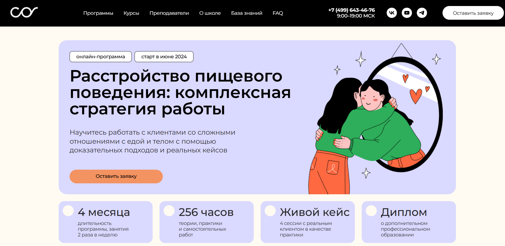
- ✅ Официальный сайт: psychology.sredaobuchenia.ru
- 💸 Цена обучения: от 75 000 ₽ уточняется на сайте школы.
- 💳 Рассрочка: доступна, на 6 платежей по 12 500 ₽, подробности по заявке.
- 📚 Формат: дистанционный формат обучения, видеолекции, реальные кейсы, домашние задания, дополнительные материалы.
- ⏳ Продолжительность: старт в июне 2024 года.
- 📜 Документ: диплом о профессиональной переподготовке установленного образца.
- 📝 Трудоустройство: не предусмотрено напрямую, но курс направлен на повышение квалификации и развитие практических навыков.
- 🔷 Для кого подходит курс: для психологов, психотерапевтов, медицинских и клинических психологов, специалистов с профессиональным или дополнительным психологическим образованием.
Особенности:
Образовательная программа ориентирована на специалистов, которые хотят научиться работать с клиентами, страдающими различными расстройствами пищевого поведения, включая нервную анорексию, булимию, компульсивное переедание и пищевые зависимости. Курс выстроен в удобном дистанционном формате, что позволяет совмещать обучение с профессиональной деятельностью. Программа включает современные методы диагностики, лечения РПП и психотерапевтические подходы, основанные на доказательной психотерапии. В процессе обучения слушатели получают доступ к учебным материалам, теоретическим и практическим занятиям, изучают стратегии психологической помощи, а также способы коррекции веса и изменений пищевого поведения. По окончании курса выдаются дипломы установленного образца.
Чему учатся студенты:
- Проводить диагностику РПП у пациентов с различными психологическими особенностями
- Применять методы коррекции пищевого поведения и поддержания результатов
- Анализировать психологические причины возникновения РПП
- Работать с психотерапевтическими методами в рамках доказательной практики
- Понимать особенности питания при различных формах расстройств
- Составлять индивидуальные программы помощи клиенту
Преподаватели:
- Ковалева Наталия Сергеевна — клинический психолог, преподаватель ВШ "Среда обучения", специалист по РПП
- Мельникова Елена Олеговна — медицинский психолог, опыт работы с пациентами с нарушениями пищевого поведения более 10 лет
- Арсеньева Ирина Владимировна — психотерапевт, преподаватель программ повышения квалификации по психологии пищевого поведения
Преимущества:
- Программа построена на практическом опыте и реальных кейсах
- Подходит для специалистов с базовым или дополнительным профессиональным образованием
- Выдается диплом о профессиональной переподготовке
- Дистанционный формат позволяет обучаться без отрыва от работы
- Обучение проводится с применением современных методов диагностики и лечения РПП
- Включены эффективные стратегии психологической помощи
- Доступ к материалам сохраняется на весь период курса
Отзывы учеников:
Слушатели высоко оценивают качество дистанционного образования, удобный формат занятий и профессионализм преподавателей. Многие отмечают улучшение практических навыков и уверенность в работе с пациентами, страдающими нарушениями пищевого поведения. Особо подчеркивают актуальность тем и реальную пользу от обучения.
Перейти на официальный сайт курсаКто такой психолог по РПП?
Психолог по РПП — это специалист, который занимается диагностикой, лечением и профилактикой расстройств пищевого поведения (РПП). К ним относятся анорексия, булимия, компульсивное переедание и другие формы нарушений отношения к еде и телу. Работа психолога направлена на восстановление здорового отношения к пище, телу и самооценке пациента.
Что делают психологи по РПП и чем они занимаются?
Основная задача специалиста — помочь человеку осознать причины своего пищевого поведения и проработать внутренние конфликты. Работа может проходить индивидуально или в группе, с подростками, взрослыми или семьями.
- Проводят диагностику и определяют вид РПП
- Работают над самооценкой, образом тела и тревожностью
- Используют когнитивно-поведенческую терапию, гештальт-подход и другие методы
- Сотрудничают с диетологами, психиатрами, эндокринологами
- Составляют индивидуальные планы терапии
Также они обучают навыкам осознанного питания, ведут просветительскую работу, организуют курсы и марафоны по восстановлению пищевого поведения.
Что должен знать и уметь психотерапевт по коррекции расстройств пищевого поведения?
Для эффективной работы психолог по РПП должен обладать не только базовыми знаниями психологии, но и глубоким пониманием физиологии, диетологии и особенностей личности пациентов с пищевыми расстройствами.
- Знание классификаций РПП (DSM-5, МКБ-11)
- Умение работать с нарушениями образа тела
- Навыки ведения кризисных состояний и суицидальной угрозы
- Понимание работы ЖКТ и влияния питания на психику
- Навыки мотивационного интервью и терапии зависимости
Также важны эмпатия, этичность, устойчивость к эмоциональному выгоранию и постоянное профессиональное развитие.
Востребованность и зарплаты психологов по РПП в России в 2025 году
На фоне роста осознанности населения и увеличения случаев РПП спрос на специалистов этой области стабильно растёт. Особенно востребованы психологи, работающие онлайн, а также в частных клиниках и центрах по восстановлению пищевого поведения.
- Начинающий психолог по РПП зарабатывает от 40 000 до 70 000 руб/мес
- Опытный специалист — от 100 000 до 250 000 руб/мес
- Онлайн-консультанты могут получать доход от 1500 руб за сессию и выше
Психологи, ведущие авторские курсы, тренинги и блоги, могут зарабатывать кратно больше за счёт личного бренда и платных программ.
Как стать психологом по расстройствам пищевого поведения и где учиться?
Чтобы стать психологом, необходимо получить профильное образование и пройти дополнительные курсы по расстройствам пищевого поведения. В 2025 году есть несколько популярных путей.
- Окончить бакалавриат и магистратуру по психологии
- Пройти сертификационные программы по РПП (например, «РПП: диагностика и терапия»)
- Изучить когнитивно-поведенческую терапию, как один из эффективных методов
- Участвовать в супервизиях, профессиональных сообществах и конференциях
Какие существуют направления в терапии РПП?
Психологи по РПП могут специализироваться на различных подходах. Наиболее эффективные и востребованные:
- Когнитивно-поведенческая терапия (КПТ) — работа с убеждениями и шаблонами мышления
- Диалектико-поведенческая терапия (ДПТ) — применяется при пограничных состояниях и булимии
- Гештальт-терапия — исследование телесности и переживаний "здесь и сейчас"
- Системная семейная терапия — работа с семейной динамикой
Выбор подхода зависит от специфики клиента и предпочтений самого специалиста.
Какие качества важны для работы с РПП?
Работа с расстройствами пищевого поведения требует не только профессиональных навыков, но и определённого типа личности.
- Терпение и выдержка
- Наличие границ и умение сохранять нейтральность
- Интерес к теме тела, питания и самооценки
- Понимание важности комплексного подхода
- Желание помогать и развиваться
Психолог по РПП часто становится «проводником» между пациентом и его внутренним миром, помогая справиться с болью, тревогой и стыдом.
Заключение
Что включает обучение по РПП для психологов?
Обучение РПП для психологов включает в себя изучение классификации расстройств пищевого поведения, методов диагностики и эффективных подходов к лечению расстройств. Программа ориентирована на развитие практических навыков, необходимых для оказания психологической помощи пациентам с различными нарушениями пищевого поведения, такими как анорексия, булимия, переедание и пищевые зависимости.
Какие цели ставятся перед курсами обучения расстройств пищевого поведения?
Цель курсов — дать клиническому психологу или медицинскому психологу глубокое понимание психологических причин и психотерапевтических методов, используемых при психотерапии РПП. Слушатели научатся диагностировать РПП, выбирать современные методы лечения и применять их с учётом индивидуальных программ терапии пациентов.
Кому подойдёт обучение по РПП для психологов?
Программы профессиональной переподготовки и повышения квалификации по теме РПП подойдут практикующим психологам, психотерапевтам, медицинским психологам, а также специалистам с психологическим образованием, желающим помогать клиентам с нарушениями пищевого поведения.
Какие формы обучения психотерапии расстройств пищевого поведения доступны?
Курсы реализуются в дистанционном формате, что удобно для занятых специалистов. Такой удобный формат обучения позволяет учиться в индивидуальном графике, получая доступ к учебным материалам, видео-лекциям и практическим заданиям с обратной связью от преподавателей.
Что изучается в рамках курсов по РПП?
Программа охватывает основы клинической психологии, стратегии психологической коррекции, современные психотерапевтические подходы, методы диагностики РПП, психологические особенности пациентов и формирование расстройств пищевого поведения.
Как проходит обучение и сколько длится курс?
Процесс обучения включает теоретический блок, практическое занятие с кейсами, анализ реальных ситуаций и итоговую аттестацию. Сроки обучения варьируются от 2 до 6 месяцев в зависимости от программы и формата обучения.
Что получают слушатели по завершению курса?
После успешного прохождения курса слушателям выдаются удостоверения о повышении квалификации или диплом о дополнительном профессиональном образовании. Эти документы подтверждают новые профессиональные компетенции.
Можно ли пройти обучение по расстройствам пищевого поведения дистанционно?
Да, дистанционное образование — один из наиболее популярных форматов. Оно соответствует современным требованиям, позволяет совмещать обучение с работой, открывает доступ к дополнительным материалам и видео-лекциям в удобное для слушателя время.
Какие методы психотерапии изучаются в рамках курса?
Слушатели изучают современные психотерапевтические методы — когнитивно-поведенческую терапию, элементы схемотерапии, доказательные модели лечения РПП и методы коррекции пищевого поведения.
Можно ли обучаться без медицинского образования?
Да, при наличии высшего психологического образования можно пройти программы дополнительного профессионального образования. Однако для лечения пациентов с тяжёлыми формами РПП в клинической практике желательно иметь медицинское образование.
Какие проблемы помогают решать курсы РПП?
Программа направлена на изучение различных расстройств пищевого поведения, включая нервную анорексию, булимию, переедание и пищевые зависимости. Слушатели учатся помогать клиенту справляться с психологическими, поведенческими и эмоциональными аспектами РПП.
Кто преподаёт на курсах по РПП?
Обучение проводят лучшие преподаватели — практикующие клинические психологи, психотерапевты, специалисты с опытом лечения пациентов с РПП. Программа основана на доказательной психотерапии и включает реальные кейсы.
Можно ли работать с расстройствами пищевого поведения после окончания курсов?
Да, после окончания обучения и получения документа о прохождении программы, специалист может помогать клиентам в рамках частной практики или работы в медучреждениях, психотерапевтических центрах, клиниках лечения РПП.
Чем отличается курс повышения квалификации от переподготовки?
Курсы повышения квалификации предназначены для расширения знаний и навыков действующих специалистов. Профессиональная переподготовка — это более углублённое обучение с возможностью работать в новой области после завершения курса.
Какие документы нужны для поступления на курсы РПП?
Обычно достаточно копии диплома о высшем психологическом образовании. Для программ дополнительного образования также могут потребоваться паспорт и заявление. Уточняйте список документов на сайте выбранного института психологии.
Как выбрать подходящий курс по РПП?
Выбирайте курс, ориентируясь на формат обучения, длительность, стоимость обучения, состав преподавателей и наличие практических заданий. Важно, чтобы программа включала современные методы диагностики и коррекции РПП.
------------------------------------------------
Реклама. Информация о рекламодателе по ссылкам в статье.